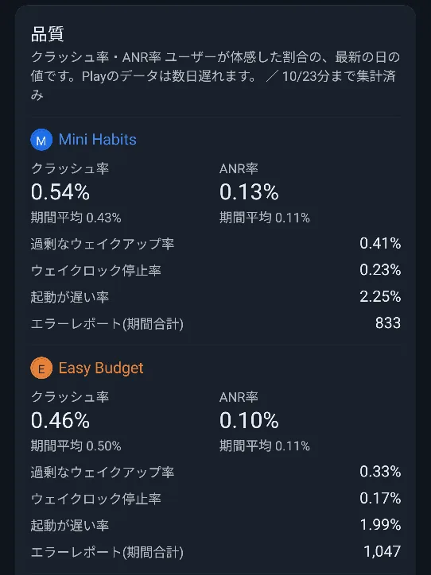
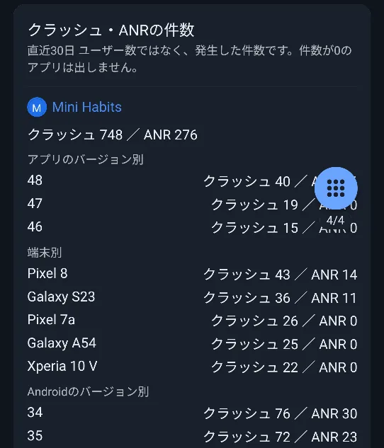

📖 はじめに（この画面でできること）
「品質」タブは、アプリの安定性を確認する画面です。Google Playが測っているクラッシュ率・ANR率などを、アプリごとに表示します。
Play Consoleのアカウントでのログインが必要です。
🛠️ 詳しい使い方
STEP 1
クラッシュ率・ANR率と、そのほかの品質指標
アプリごとに、Google Playが測っている品質の数字を表示します（ユーザーが体感した割合の、最新の日の値）。
- クラッシュ率: アプリが突然終了した割合です。「期間平均」も添えられます。
- ANR率: アプリが応答しなくなった割合です。「期間平均」も添えられます。
- 過剰なウェイクアップ率・ウェイクロック停止率・起動が遅い率: 電池の消費や起動の速さに関する指標です。
- エラーレポート（期間合計）: 期間内に届いたエラーレポートの数です。
Playの基準（クラッシュ率1.09%・ANR率0.47%）を超えた値は、赤で表示され、「Playの基準超え」と案内が出ます。取得できなかった指標は、表示されません。
⏱ 遅れについて
Playのデータは、数日遅れます。「◯/◯分まで集計済み」で、いつの値かを確認できます。

アプリごとの品質の数字
STEP 2
クラッシュ・ANRの件数
直近30日のクラッシュとANRの件数（率ではなく、発生した回数）を、アプリごとに表示します。
- アプリのバージョン別・端末別・Androidのバージョン別に、件数の多いものが上位に並びます。
- 件数が0のアプリは表示されません。
どのバージョン・どの端末で問題が起きているかを、調べる手がかりになります。

バージョン・端末別の件数
❓ よくある質問（FAQ）
Q クラッシュ率とクラッシュ件数は、何が違いますか？
クラッシュ率は、ユーザーが体感した割合です。クラッシュ件数は、直近30日に実際に発生した回数で、ユーザー数ではありません。
Q 数字が赤くなりました。どうすればよいですか？
Google Playが定める基準（クラッシュ率1.09%、ANR率0.47%）を超えた状態です。バージョン別・端末別の件数を見て、原因を調べる手がかりにしてください。
Q 品質の数字が出ないアプリがあります。
品質データがまだ無いアプリや、Playから取得できなかった指標は、表示されません。取得に失敗しても、ほかの数字の表示には影響しません。